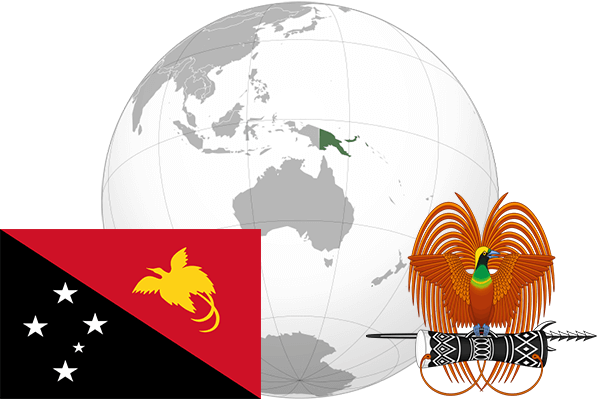

To`liq nomi: Papua Yangi Gvineya Mustaqil Davlati
Region: Tinch okeani
Qonunchilik shakli: Parlamentli monarxiya
Mustaqillik kuni: 16 sentabr 1975 (Avstraliyadan)
Poytaxt: Port Moresbi
Maydoni: 462,840 km²
Chegaradosh davlatlari: Indoneziya
Aholisi: 7 334 638 (2013-yil)
Aholi zichligi: 13 /км²
Aholining o`rtacha yoshi: 62,76 yil (2015-yil)
Rasmiy tili: Ingliz, Tok Pisin, Xiri-motu
Dini: Xristian
Pul birligi: Kina
Telefon prefiksi: + 675
Internet domen: .pg
Xalqaro tashkilotlarga a`zoligi: BMT (1975-yil)
Dengiz va okeanlarga chiqishi: Tinch okeani
YIM: Butun: $21.18 mlrd.(2017-yil) Jon boshiga: $2,613
Yirik shaharlari: Port Moresbi, Laye, Arava